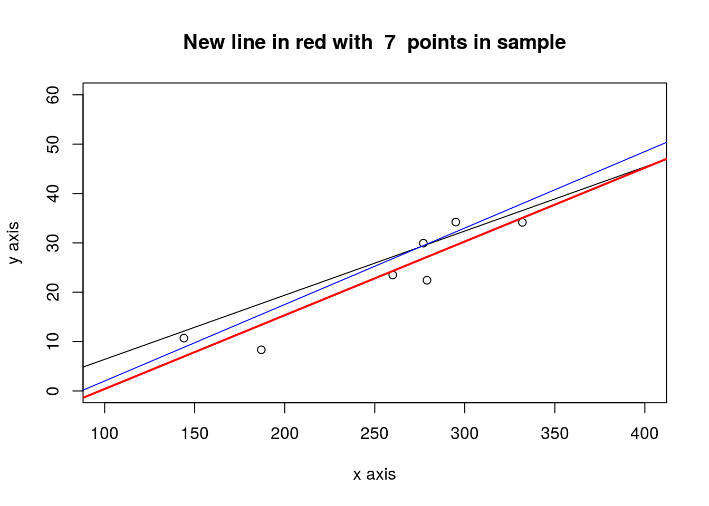
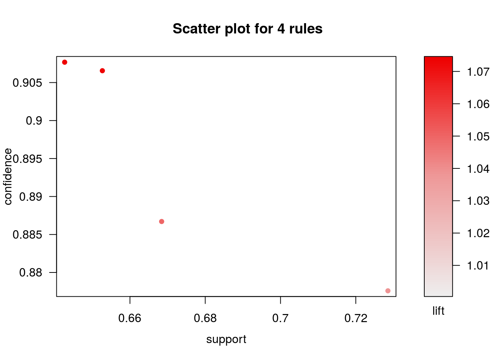

Chapter 11 Clustering
library(foreign)
library(fpc)
kc1 <- read.arff("./datasets/defectPred/D1/KC1.arff")
# Split into training and test datasets
set.seed(1)
ind <- sample(2, nrow(kc1), replace = TRUE, prob = c(0.7, 0.3))
kc1.train <- kc1[ind==1, ]
kc1.test <- kc1[ind==2, ]
# No class
kc1.train$Defective <- NULL
ds <- dbscan(kc1.train, eps = 0.42, MinPts = 5)
kc1.kmeans <- kmeans(kc1.train, 2)kMeans
#library(reshape, quietly=TRUE)
#kc1.kmeans <- kmeans(sapply(na.omit(kc1.train), rescaler, "range"), 10)11.1 Association rules
library(arules)## Loading required package: Matrix##
## Attaching package: 'arules'## The following objects are masked from 'package:base':
##
## abbreviate, writex <- as.numeric(kc1$LOC_TOTAL)
str(x)## num [1:2096] 5 3 3 3 12 5 3 3 3 13 ...summary(x)## Min. 1st Qu. Median Mean 3rd Qu. Max.
## 1.00 3.00 9.00 20.37 24.00 288.00hist(x, breaks=30, main="LoC Total")
xDisc <- discretize(x, categories=5)
# table(xDisc)
for(i in 1:21) kc1[,i] <- discretize(kc1[,i], "frequency", categories=5)
str(kc1)## 'data.frame': 2096 obs. of 22 variables:
## $ LOC_BLANK : Factor w/ 4 levels "0","1","[2, 4)",..: 1 1 1 1 3 1 1 1 1 3 ...
## $ BRANCH_COUNT : Factor w/ 4 levels "1","3","[4, 8)",..: 1 1 1 1 1 1 1 1 1 1 ...
## $ LOC_CODE_AND_COMMENT : Factor w/ 2 levels "0","[1,12]": 1 1 1 1 1 1 1 1 1 1 ...
## $ LOC_COMMENTS : Factor w/ 3 levels "0","1","[2,44]": 1 1 1 1 1 1 1 1 1 1 ...
## $ CYCLOMATIC_COMPLEXITY: Factor w/ 4 levels "1","2","[3, 5)",..: 1 1 1 1 1 1 1 1 1 1 ...
## $ DESIGN_COMPLEXITY : Factor w/ 3 levels "1","[2, 4)","[4,45]": 1 1 1 1 1 1 1 1 1 1 ...
## $ ESSENTIAL_COMPLEXITY : Factor w/ 2 levels "1","[3,26]": 1 1 1 1 1 1 1 1 1 1 ...
## $ LOC_EXECUTABLE : Factor w/ 5 levels " 0","[ 1, 3)",..: 3 2 2 2 3 3 2 2 2 3 ...
## $ HALSTEAD_CONTENT : Factor w/ 5 levels "[ 0.00, 5.80)",..: 3 1 1 1 3 3 1 1 1 4 ...
## $ HALSTEAD_DIFFICULTY : Factor w/ 5 levels "[ 0.00, 1.57)",..: 3 1 1 1 3 3 1 1 1 3 ...
## $ HALSTEAD_EFFORT : Factor w/ 5 levels "[ 0.0, 12.2)",..: 3 1 1 1 3 3 1 1 1 3 ...
## $ HALSTEAD_ERROR_EST : Factor w/ 5 levels "0.00","0.01",..: 2 1 1 1 3 2 1 1 1 3 ...
## $ HALSTEAD_LENGTH : Factor w/ 5 levels "[ 0, 5)","[ 5, 10)",..: 3 1 1 1 3 3 1 1 1 4 ...
## $ HALSTEAD_LEVEL : Factor w/ 5 levels "[0.00,0.08)",..: 4 1 1 1 3 4 1 1 1 3 ...
## $ HALSTEAD_PROG_TIME : Factor w/ 5 levels "[ 0.00, 0.68)",..: 3 1 1 1 3 3 1 1 1 3 ...
## $ HALSTEAD_VOLUME : Factor w/ 5 levels "[ 0.0, 10.0)",..: 3 1 1 1 3 3 1 1 1 4 ...
## $ NUM_OPERANDS : Factor w/ 5 levels "[ 0, 2)","[ 2, 4)",..: 3 1 1 1 3 3 1 1 1 3 ...
## $ NUM_OPERATORS : Factor w/ 5 levels "[ 0, 4)","[ 4, 7)",..: 3 1 1 1 3 3 1 1 1 4 ...
## $ NUM_UNIQUE_OPERANDS : Factor w/ 5 levels "[ 0, 2)","[ 2, 4)",..: 2 1 1 1 3 2 1 1 1 4 ...
## $ NUM_UNIQUE_OPERATORS : Factor w/ 5 levels "[ 0, 4)","[ 4, 6)",..: 2 1 1 1 2 2 1 1 1 3 ...
## $ LOC_TOTAL : Factor w/ 5 levels "[ 1, 3)","[ 3, 6)",..: 2 2 2 2 3 2 2 2 2 3 ...
## $ Defective : Factor w/ 2 levels "N","Y": 1 1 1 1 1 1 1 1 1 1 ...rules <- apriori(kc1, parameter = list(support=0.60, confidence=0.800, minlen=3))## Apriori
##
## Parameter specification:
## confidence minval smax arem aval originalSupport maxtime support minlen
## 0.8 0.1 1 none FALSE TRUE 5 0.6 3
## maxlen target ext
## 10 rules FALSE
##
## Algorithmic control:
## filter tree heap memopt load sort verbose
## 0.1 TRUE TRUE FALSE TRUE 2 TRUE
##
## Absolute minimum support count: 1257
##
## set item appearances ...[0 item(s)] done [0.00s].
## set transactions ...[94 item(s), 2096 transaction(s)] done [0.00s].
## sorting and recoding items ... [5 item(s)] done [0.00s].
## creating transaction tree ... done [0.00s].
## checking subsets of size 1 2 3 4 done [0.00s].
## writing ... [18 rule(s)] done [0.00s].
## creating S4 object ... done [0.00s].rules## set of 18 rulesrules <- apriori(kc1,
parameter = list(minlen=3, supp=0.6, conf=0.8),
appearance = list(rhs=c("Defective=Y", "Defective=N"),
default="lhs"),
control = list(verbose=F))
#rules <- apriori(kc1,
# parameter = list(minlen=2, supp=0.05, conf=0.3),
# appearance = list(rhs=c("Defective=Y", "Defective=N"),
# default="lhs"))
inspect(rules)## lhs rhs support confidence lift
## [1] {LOC_COMMENTS=0,
## ESSENTIAL_COMPLEXITY=1} => {Defective=N} 0.6526718 0.9065606 1.072926
## [2] {LOC_CODE_AND_COMMENT=0,
## LOC_COMMENTS=0} => {Defective=N} 0.6684160 0.8867089 1.049431
## [3] {LOC_CODE_AND_COMMENT=0,
## ESSENTIAL_COMPLEXITY=1} => {Defective=N} 0.7285305 0.8775862 1.038634
## [4] {LOC_CODE_AND_COMMENT=0,
## LOC_COMMENTS=0,
## ESSENTIAL_COMPLEXITY=1} => {Defective=N} 0.6426527 0.9076819 1.074253 rules## set of 4 rules library(arulesViz)## Loading required package: grid plot(rules)